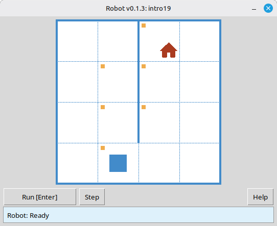
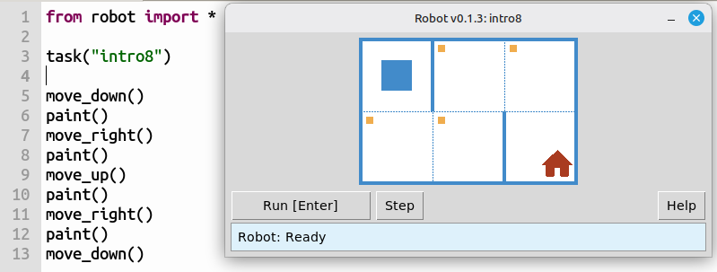
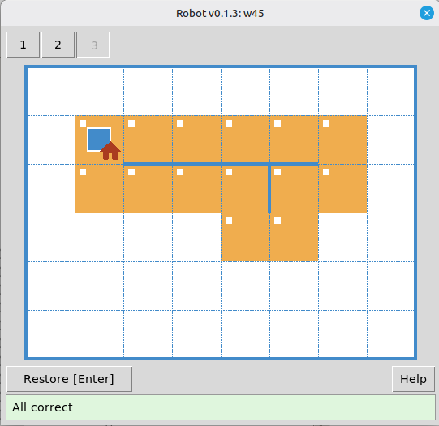
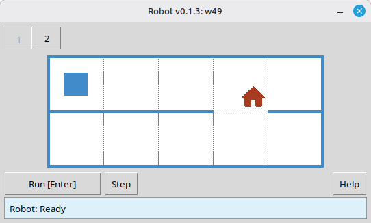
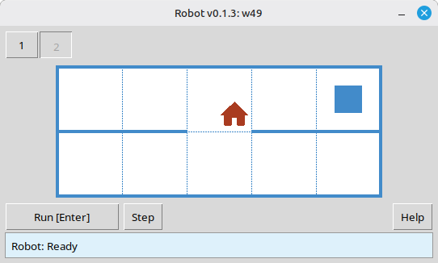
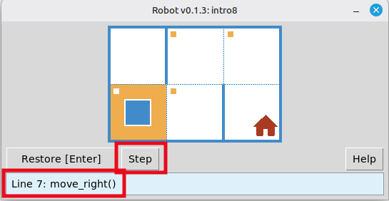
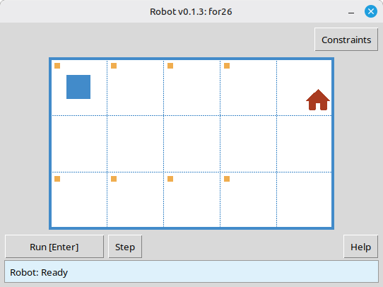
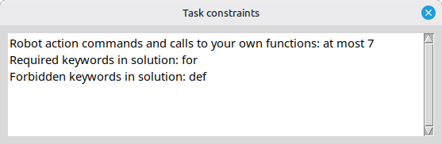
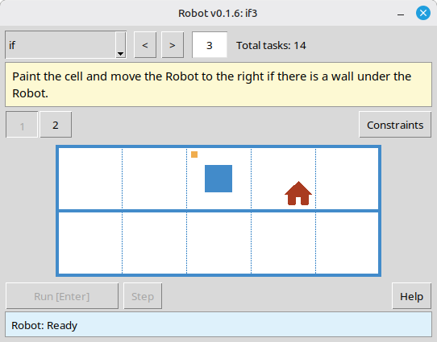

Task or free field
task("name")- Open a task from the bundled set.
field(width=8, height=6)- Open a free field without a task file.
For computer science teachers
Students write small Python programs: they move the Robot across a grid, paint cells, and check for walls and already-painted cells. All of this is visible in the simulator window and runs locally.

Tasks are small problems on a clear field. Students practice command sequences, loops, conditions, and functions while seeing the result of their code right away.
Walls, marked cells, and the goal are visible from the start, so students can focus on the algorithm.
After a run, Robot checks the result. Students can see whether the solution passed and try again without waiting for manual review.
Many tasks include several environments. One program has to pass each variant, which encourages a general algorithm instead of memorized moves.
Students can open each environment before writing code and see which cases their solution must handle.
Programs can run one command at a time in the Robot window. This is useful for debugging and for explaining a solution on a projector.
Some tasks limit commands or language constructs. The limits point students toward the intended idea, such as a loop, condition, or function.

intro8: reach the house and paint every marked cell.When all environments pass, Robot shows that in the window. Students do not have to wait for a manual check.

The environment selector lets students inspect each field variant before they plan a solution that works everywhere.


Step mode shows what each command does. It is useful for self-checking and for walking through a solution with the class.

When a task has limits, Robot shows them next to the task. Students can see which tools they are expected to use.


The separate viewer mode opens the task catalog without running a student solution. A teacher can choose a topic, jump to a task number, read the condition, inspect every environment, and see the limits. It is useful for lesson preparation and for showing a task on a projector.

if3).After you introduce a topic, students work through tasks at their own pace. Automatic checking removes part of the routine review, so you can focus on students who need help.
for12 or w25.task("…") and improve their program until every environment passes.Tasks are grouped by topic, so they can fit into an existing course plan. Browse all tasks or see the command reference.
intro1 … intro24fun1 … fun20for loop – for1 … for28for + functions – forfun1 … forfun9while loop – w1 … w51while + functions – wfun1 … wfun12if – if1 … if14while + if – wif1 … wif13if / else – ifelse1 … ifelse12compound1 … compound11
The Python API is intentionally small. Students can start with from robot import * or import only the names they need.
from robot import *
task("intro8")
move_down()
paint()
move_right()
paint()
move_up()
paint()
move_right()
paint()
move_down()task("name")field(width=8, height=6)move_right()move_left()move_up()move_down()paint()is_free_left() … is_free_down()is_wall_left() … is_wall_down()is_cell_painted()is_cell_not_painted()pol()printn(value)Task conditions, the Robot simulator window, and help text are available in the languages listed below. The language is selected automatically based on the operating system's interface language.
robot package. You can start from sample_solution.py in the archive.task(). The task names are listed in the tracks above.viewer/viewer.py from the module archive.
Requirements: Python 3.7+ and the standard library. The Robot window uses tkinter, which is included with most desktop Python installations.